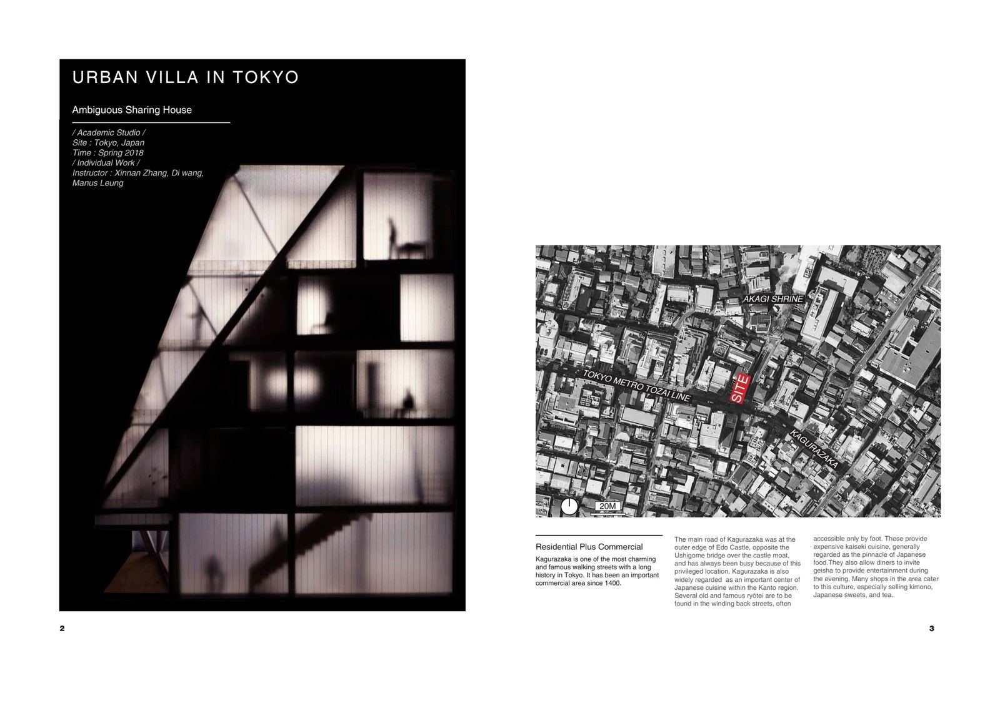
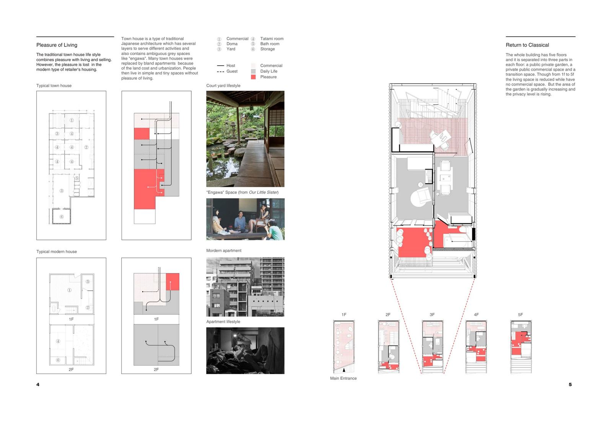
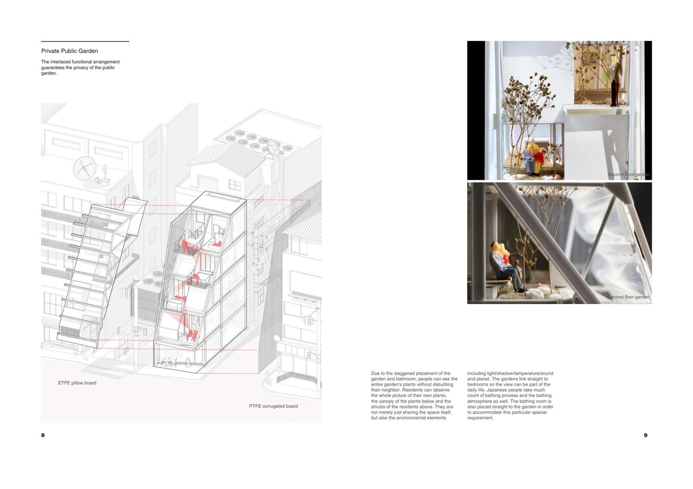
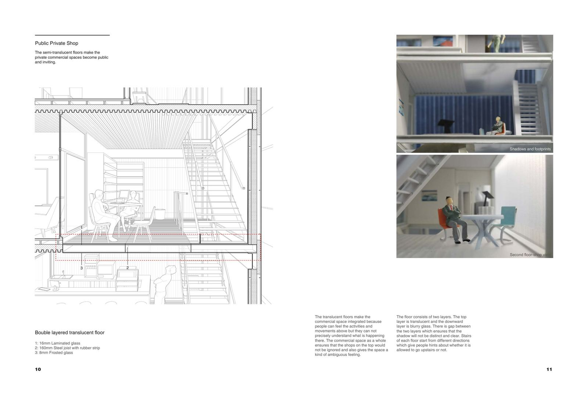
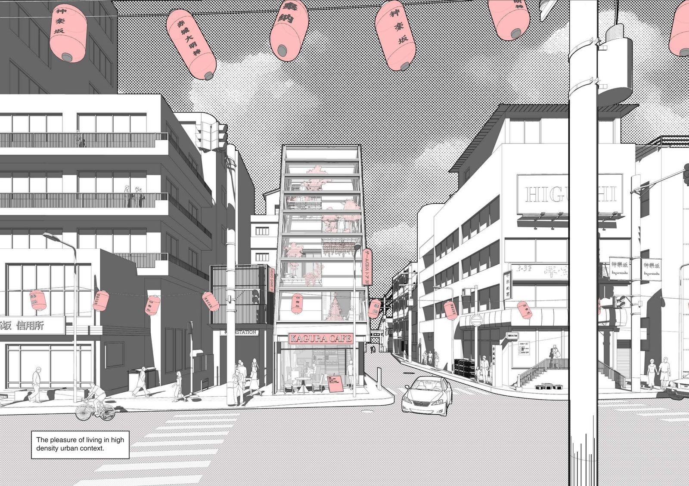

The project is located in Kagurazaka, Tokyo — a historic district at the outer edge of Edo Castle known for its traditional ryotei restaurants and winding back streets. The design explores the concept of ambiguous sharing in high-density urban living, drawing inspiration from traditional Japanese town houses that contain layered spaces for different activities and grey spaces like "engawa."
The building has five floors separated into three parts on each floor: a public-private garden, a private-public commercial space, and a transition space. From the first to fifth floor, living space is reduced while garden area gradually increases and the privacy level rises.


The public garden is a carefully constructed artificial natural environment shared by four households. ETFE pillows control light — becoming opaque in strong summer light and transparent in winter to create a greenhouse effect. Gaps at the top allow wind, fresh air, and rainwater to flow along the exterior walls.
Due to the staggered placement of gardens and bathrooms, residents can observe the full picture of their own plants, the canopy of the plants below, and the shrubs of the residents above — sharing not just space, but environmental elements including light, shadow, temperature, and sound.


The translucent floors make the commercial space integrated — people can feel the activities above but cannot precisely understand what is happening there. The floor consists of two layers: a translucent top and a blurry glass below, with a gap between to ensure shadows remain indistinct. Stairs on each floor start from different directions, giving hints about whether visitors are welcome to go upstairs.

